Contents
PART 1
clear;
clc;
data = load('data.txt');
x = data(:, 4);
x = smooth(x, 12);
D = 10;
ntrain = 500;
nval = 100;
ntest = 50;
trainInd = 1 : ntrain;
valInd = ntrain + 1 : ntrain + nval;
testInd = ntrain + nval + 1 : ntrain + nval + ntest;
net = timedelaynet(1:D,8,'trainlm');
net.divideFcn = 'divideind';
net.divideParam.trainInd = trainInd;
net.divideParam.valInd = valInd;
net.divideParam.testInd = testInd;
x = con2seq(x(1:ntrain+nval+ntest)');
net = configure(net, x, x);
net = init(net);
net.trainParam.epochs = 600;
net.trainParam.max_fail = 2000;
net.trainParam.goal = 10e-5;
view(net);
[Xs, Xi, Ai, Ts] = preparets(net, x, x);
net = train(net, Xs, Ts, Xi, Ai);
Y = sim(net, Xs, Xi);
figure;
hold on;
grid on;
plot(cell2mat(x), '-b');
plot([cell2mat(Xi) cell2mat(Y)], '-r');
xm = cell2mat(x);
ym = cell2mat(Y);
figure;
hold on;
grid on;
plot(xm(ntrain + nval + 1 : ntrain + nval + ntest), '-b');
plot(ym(ntrain + nval - 9 : ntrain + nval + ntest - 10), '-r');
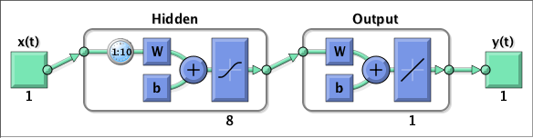 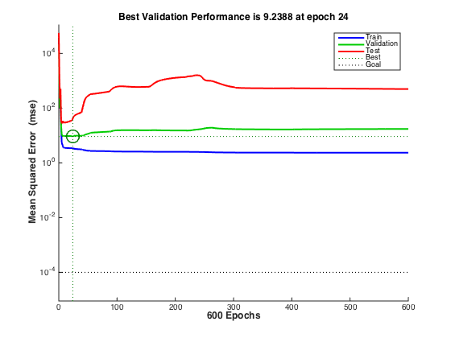 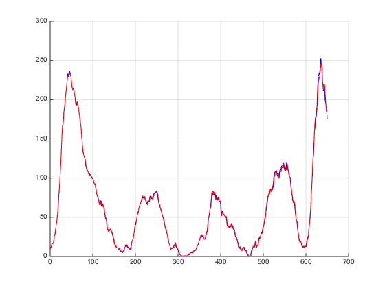 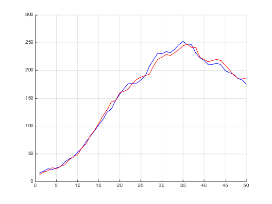
PART 2
k1 = 0 : 0.025 : 1;
p1 = sin(4 * pi * k1);
t1 = -ones(size(p1));
k2 = 2.9 : 0.025 : 4.55;
g = @(k) cos(-cos(k) .* k .^ 2 + k);
p2 = g(k2);
t2 = ones(size(p2));
R = {6; 7; 1};
P = [repmat(p1, 1, R{1}), p2, repmat(p1, 1, R{2}), p2, repmat(p1, 1, R{3}), p2];
T = [repmat(t1, 1, R{1}), t2, repmat(t1, 1, R{2}), t2, repmat(t1, 1, R{3}), t2];
Pseq = con2seq(P);
Tseq = con2seq(T);
net = distdelaynet({0 : 4, 0 : 4}, 8, 'trainoss');
net.layers{2}.transferFcn = 'tansig';
net.divideFcn = '';
net = configure(net, Pseq, Tseq);
view(net);
net.trainParam.epochs = 100;
net.trainParam.goal = 10e-5;
[Xs, Xi, Ai, Ts] = preparets(net, Pseq, Tseq);
net = train(net, Xs, Ts, Xi, Ai);
Y = sim(net, Xs, Xi);
figure;
hold on;
grid on;
plot(cell2mat(Tseq), '-b');
plot([cell2mat(Xi) cell2mat(Y)], '-r');
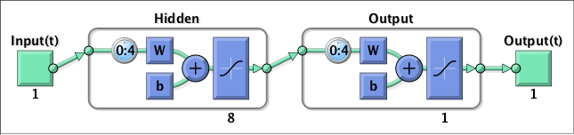 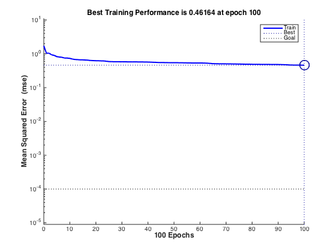 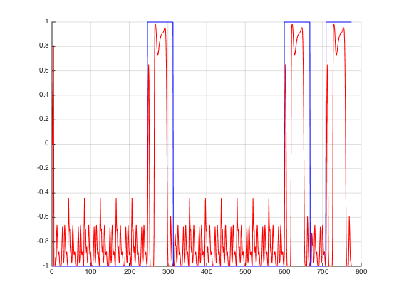
t0 = 0;
tn = 10;
dt = 0.01;
n = (tn - t0) / dt + 1;
fun = @(k) cos(k .^ 2);
fun2 = @(y, u) y ./ (1 + y.^2) + u.^3;
u = zeros(1, n);
u(1) = fun(0);
x = zeros(1, n);
for i = 2 : n
t = t0 + (i - 1) * dt;
x(i) = fun2(x(i - 1), u(i - 1));
u(i) = fun(t);
end
figure
subplot(2,1,1)
plot(t0:dt:tn, u, '-b'),grid
ylabel('control')
subplot(2,1,2)
plot(t0:dt:tn, x, '-r'), grid
ylabel('state')
xlabel('t')
D = 3;
ntrain = 700;
nval = 200;
ntest = 97;
trainInd = 1 : ntrain;
valInd = ntrain + 1 : ntrain + nval;
testInd = ntrain + nval + 1 : ntrain + nval + ntest;
net = narxnet(1 : 3, 1, 10);
net.trainFcn = 'trainlm';
net.divideFcn = 'divideind';
net.divideParam.trainInd = trainInd;
net.divideParam.valInd = valInd;
net.divideParam.testInd = testInd;
net.trainParam.epochs = 600;
net.trainParam.max_fail = 600;
net.trainParam.goal = 10e-8;
view(net);
[Xs, Xi, Ai, Ts] = preparets(net, con2seq(u), {}, con2seq(x));
net = train(net, Xs, Ts, Xi, Ai);
Y = sim(net, Xs, Xi);
figure
subplot(3,1,1)
plot(t0:dt:tn, u, '-b'),grid
ylabel('control')
subplot(3,1,2)
plot(t0:dt:tn, x, '-b', t0:dt:tn, [x(1:D) cell2mat(Y)], '-r'), grid
ylabel('state')
subplot(3,1,3)
plot(t0+D*dt:dt:tn, x(D+1:end) - cell2mat(Y)), grid
ylabel('error')
xlabel('t')
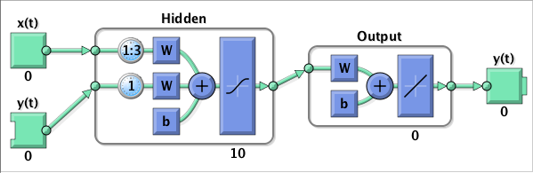 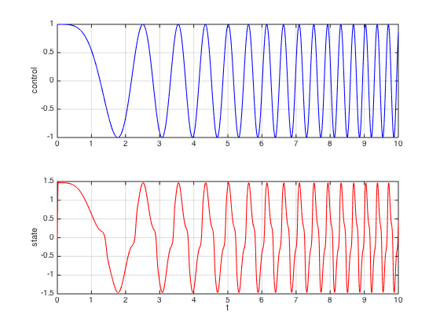 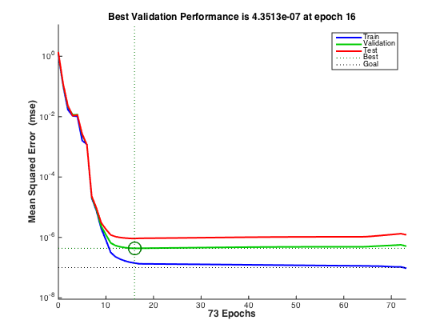 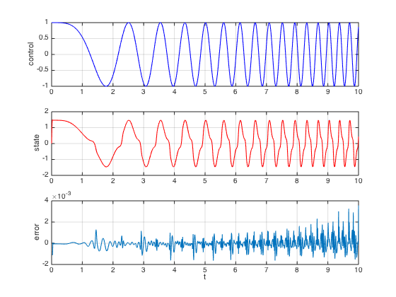